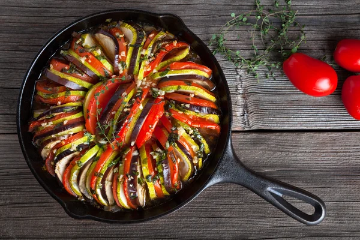

Ratatouille

Description
Ratatouille is a classic end-of-summer French stew that's fun to say (rat-tuh-TOO-ee) and fun to make. It's packed with fresh produce: tomatoes, eggplant, zucchini and yellow squash, and bell pepper.
Ingredients
- 1 (1 pound) eggplant, cut into 1-inch cubes
- 1 zucchini, sliced
- 1 small green bell pepper, chopped
- 1 onion, coarsely chopped
- cooking spray
- ¼ teaspoon ground black pepper, divided
- 1 tomato, chopped
- 1 tablespoon extra-virgin olive oil
- ¼ cup chopped fresh parsley
- ⅜ teaspoon salt, divided